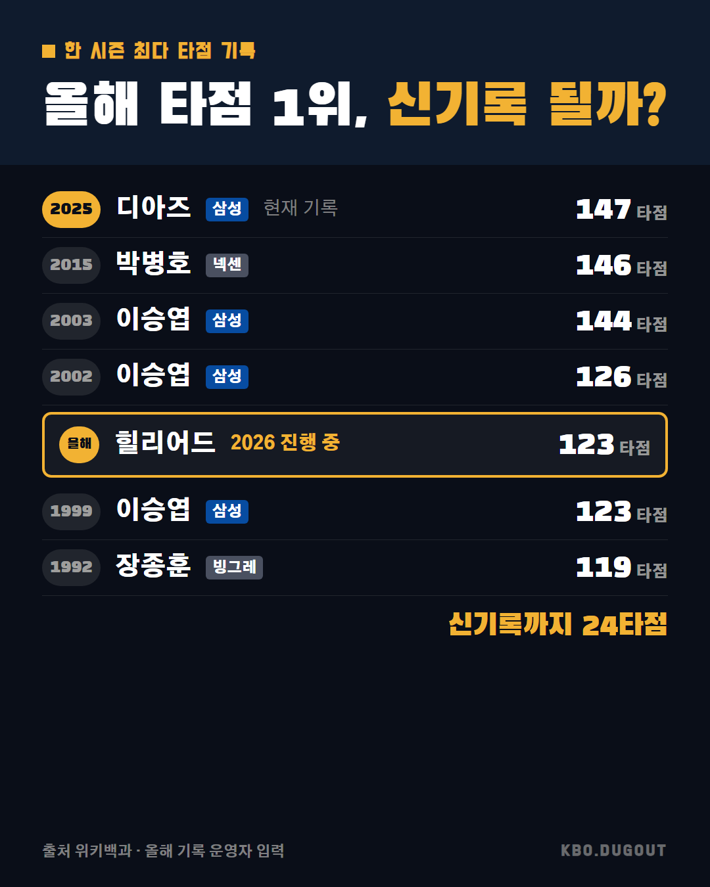

라이스 5타수 4안타 6타점 만루포까지, 양키스 첫판 완승이네 화이트삭스는 3년 연속 100패 하다가 5년 만에 포스트시즌 올라와서 그 첫 경기를 이겼어, 이런 반등 보면 야구 진짜 재밌다
QA 너무 김
라이스 5타수 4안타 6타점 만루포까지, 양키스 첫판 완승이네 화이트삭스는 3년 연속 100패 하다가 5년 만에 포스트시즌 올라와서 그 첫 경기를 이겼어, 이런 반등 보면 야구 진짜 재밌다
QA 너무 김

디아즈 2025년 147타점 찍고 박병호 146, 이승엽 144·126·123, 장종훈 119까지 역대 최다 타점 줄세워봤다ㅋㅋ 힐리어드 지금 123타점인데 저 기록까지 딱 24타점 남음 출처: 위키백과 (CC BY-SA) · 올해 기록 운영자 입력
QA 없음

이승엽 2003년 56개, 1999년 54개, 심정수 2003년 53개, 박병호 2015년 53개, 2014년 52개, 르윈 디아즈 2025년 50개, 나바로 2015년 48개, 이승엽 2002년 47개. 올해 홈런 1위 김도영은 41개로 TOP11 진입까지 딱 5개 남았다 ㅋㅋ 출처: 위키백과 (CC BY-SA) · 올해 기록 기사 9.30
QA 없음